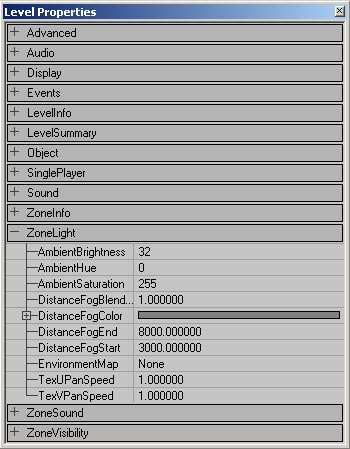
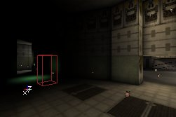
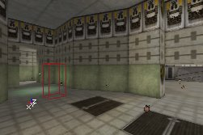
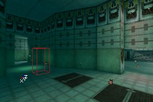
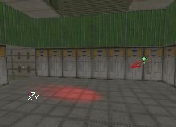
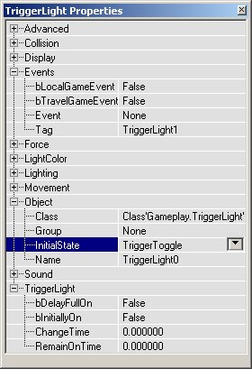

UDN
Search public documentation:
TypesOfLightsKR
English Translation
日本語訳
Interested in the Unreal Engine?
Visit the Unreal Technology site.
Looking for jobs and company info?
Check out the Epic games site.
Questions about support via UDN?
Contact the UDN Staff
日本語訳
Interested in the Unreal Engine?
Visit the Unreal Technology site.
Looking for jobs and company info?
Check out the Epic games site.
Questions about support via UDN?
Contact the UDN Staff
빛의 유형
문서 요약: LightActors 및 광원의 다양한 유형에 대한 가이드. 문서 변경 내역: 좀 더 관리 가능한 문서로 분리하기 위해 Jason Lentz(DemiurgeStudios?) 에 의해 마지막 업데이트됨. 원저자: Lode Vandevenne(UdnStaff)개요
빛 설치의 가장 대표적인 방법은 역시 레벨에서 마우스 오른쪽 버튼을 클릭하여 추가하는 기본 빛입다만 이 외에도 레벨에 조명을 추가하는 다양한 방법이 있습니다. 여기에서는 이러한 대체 방법 및 최상의 사용 방법에 대해 설명합니다.ZoneLight
ZoneLight 또는 Ambient Lighting 은 두 번째로 자주 사용되는 맵의 빛 설치 방법입니다. Light 액터가 이 두 방법에는 필요없습니다. 이것은 균일한 평면 빛을 전체 영역의 각 벽면이나 객체에 만들지만 이것은 그림자를 만들지 않으므로 어디로 빛이 오는지 모르겠습니다. ZoneLight 는 그림자 부분이 덜 검정색 나게 만들고 테레인 또는 방안에서는 매우 밝습니다. 맵의 한 영역에서의 Ambient Lighting 을 변경하려면 해당 영역의 ZoneInfo 액터의 속성을 열거나 ZoneInfo 이 없으면 View 메뉴의 Level Properties 를 엽니다(Level Properties 는 ZoneInfo 없이 영역에 대한 영역 설정을 결정합니다). 거기서 ZoneLight 를 확장합니다.
실제 ZoneLight 의 경우 AmbientBrightness, AmbientHue, AmbientSaturation 만이 중요합니다. 이들은 LightBrightness, LightHue, LightSaturation 과 동일한 일을 합니다. AmbientBrightness 는 ZoneLight 의 밝기를 변경합니다. 이 값을 0 에 설정하면 ZoneLight 가 전혀 없게 됩니다. 맵에서의 유일한 빛은 light 액터로부터 나오는 빛이 됩니다.
AmbientBrightness 를 각각 32 와 128 로 설정하면 다음과 같이 됩니다.

255 로 설정하면 영역의 모든 표면이 거의 최고 밝기가 되고 따라서 맵에서 light 액터로부터의 조명을 거의 볼 수 없게 됩니다. AmbientHue 및AmbientSaturation 을 사용하여 Ambient Lighting 의 색상을 변경할 수 있습니다.
AmbientHue 및AmbientSaturation 을 사용하여 Ambient Lighting 의 색상을 변경할 수 있습니다.


다른 Light 액터
Light Actors 만이 빛을 발휘하는 것은 아닙니다. Lighting (조명) 과 LightColor 속성만을 가지는 한 모든 액터 클래스가 빛을 발산할 수 있습니다. 액터 클래스의 조명을 작동시키려면 LightType 이 LT_None 으로 설정되지 않고 LightRadius > 0 및 LightBrightness > 0 인 것을 확인하십시오. 일부 액터의 경우, 예를 들면 정적 메쉬, 액터 내부에서 빛이 나오고 액터가 그림자를 유발할 수 있기 때문에 빛을 발산하지 않습니다. 또한 일부 전문화된 빛이 Actor Class Browse 에 있습니다.다음은 그러한 빛의 하위 클래스입니다.
- SpotLight: 이것은 LightEffect LE_SpotLight, bDirectional 이 이미 활성화되어 있는 빛입니다.
- Sunlight: 이것은 LightEffect LE_Sunlight 를 갖고 이미 활성된 bDirectional 및 고유의 태양 스프라이트 기호를 갖습니다. LightEffect 와 bDirectional 을 수동으로 설정하고 싶지 않은 경우 이 빛을 태양광으로 사용할 수 있습니다.
- TriggerLight: 이 빛의 유형은 트리거되어 온/오프될 수 있습니다.
Spotlight (스포트 라이트)
LightEffect 를 LE_SpotLight 로 설정하면 빛을 회전시키면서 스포트 라이트의 방향을 설정할 수 있습니다. 첫째, Light Properties --> Advanced 에서 bDirectional 을 True 로 설정하십시오. 그러면 빛에 화살표 표시가 되어 방향을 알기 쉽게되지만 이렇게 할 필요는 없습니다. 그런 다음 Brush Rotate Tool 을 사용하여 이것을 회전시킬 수 있습니다. 또한 Pitch 또는 Yaw 를 적용시킬 수 있지만 구르기는 여기서 별로 활용할 수 없습니다.


 Properties --> Movement --> Rotation 에서 빛의 회전을 설정할 수 있습니다. 여기서 원하는 Pitch 와 Yaw 값을 입력할 수 있습니다 (Unreal 단위로 65536 은 환산하면 360 �를 나타냅니다).
Properties --> Movement --> Rotation 에서 빛의 회전을 설정할 수 있습니다. 여기서 원하는 Pitch 와 Yaw 값을 입력할 수 있습니다 (Unreal 단위로 65536 은 환산하면 360 �를 나타냅니다).
Sunlight (햇빛)
Sunlight 는 bDirectional 이 True 로 LightEffect 가 LE_Sunlight 로 설정되고, 또한 태양 같은 스프라이트 기호를 가진 일반 빛입니다. 이 빛의 유형은 빛이 무한대 떨어진 평행 광선인 것처럼 계산되어집니다. 또한 광선은 무한 길이이므로 LightRadius 설정은 적용되지 않습니다. SpotLight 를 회전시키는 것과 같은 방법으로 빛을 회전시켜 태양의 방향을 설정할 수 있습니다. 화살표는 햇빛이 투영되는 방향을 가리킵니다. 광선이 무한대로 떨어진 곳에서 시작되고 가짜 배경막 표면만을 통과해 오기때문에 Sunlight 는 가짜 배경막이 있는 경우에만 작동합니다. Sunlight 는 실외 환경용이고 스카이박스가 있기 때문에 대부분의 시간 이 방법은 문제가 되지 않습니다. 하지만 맵 전체가 Sunlight 을 받는 것을 제외하고 가짜 배경막 없이 맵에서 Sunlight 가 작동하도록 할 수 있습니다. Sunlight 를 선택하고 그것을 약간 이동시키는 것입니다. 이제 올바른 방향으로 향해 있는 모든 벽면에 Sunlight 가 비추게 됩니다. Sunlight 는 테레인용으로 특화되어 만들어졌지만 정적 메쉬와 BSP 와 같은 다른 객체에서도 또한 작동합니다. 예를 들면, 야외 맵 Mesas 에서 거의 모든 조명은 Sunlight 에서 옵니다.
TriggerLight
참고: TriggerLight 를 사용하려면 bDynamicLight 를 True 로 설정해야 합니다. TriggerLight 는 예를 들어 트리거와 같은 Event 에 의해 온/오프 전환될 수 있습니다. Actor Browser 에서 Triggers --> Trigger 를 선택하고 맵에서 빛을 스위치 전환시키고자 하는 위치에 배치합니다. 그런 다음 Light --> TriggerLight 를 선택하고 맵에 배치합니다. Trigger 의 Trigger Properties 를 열고 Events 를 확장한 다음 예를 들어 "TriggerLight1" 과 같은 이벤트 이름을 입력하십시오. 이제 TriggerLight 속성을 열고 여기서도 마찬가지로 Events 를 확장합니다. Tag 아래에 위에서 입력했던 동일한 트리거의 Event 이름을 입력합니다. 예를 들어 "TriggerLight1" 을 입력합니다. TriggerLight 속성에서 Object 을 확장한 다음 InitialState 로 이동합니다. InitialState 는 다음 Trigger 이벤트에 빛이 반응하는 방법을 결정합니다.- TriggerToggle: 트리거를 클릭할 때마다 빛이 온/오프가 토글합니다.
- TriggerTurnsOn: 트리거 접촉 후에 계속해서 TriggerLight 가 활성화됩니다.
- TriggerTurnsOff: 트리거 접촉 후에 계속해서 TriggerLight 가 해제됩니다. TriggerTurnsOff 를 사용하는 경우 bInitiallyOn 을 True 로 설정하는 것을 잊지 마십시오. 그렇지 않으면 항상 빛이 꺼져있게 됩니다.
- TriggerControl: 트리거 반경에 있는 한 빛이 켜지지만 트리거 반경 밖에 있는 경우 빛은 꺼집니다.
- TriggerPound: TriggerTurnsOn 과 유사하게 작동합니다.
- None: 빛에는 InitialState 가 없고 트리거에 반응하지 않는 것을 의미합니다.

 TriggerLight 를 확장하면 추가 속성을 사용할 수 있습니다.
TriggerLight 를 확장하면 추가 속성을 사용할 수 있습니다.
- bDelayFullOn: True 이고 changetime 을 0 이상으로 설정하면 빛은 페이드되지 않지만 x 초 기다린 다음 온/오프가 되버립니다.
- bInitiallyOn: True 인 경우 맵을 시작하면 빛이 켜집니다. 예를 들면 TriggerToggle-light 를 가진 경우 맨 처음에는 빛이 켜있고 트리거를 접촉하면 꺼집니다. 하지만 이것이 False 로 설정된 경우 맨 처음 꺼져있다가 트리거를 접촉하면 켜지게 됩니다.
- ChangeTime: 한 상태에서 다른 상태로 빛을 전환시키는데 걸리는 시간. 빛이 꺼져있고 트리거를 접촉했을때 다시 켜지면 빛은 꺼진 상태에서 켜진 상태로 x 초만에 페이드됩니다. 여기서 x초는 ChangeTime 값입니다. 이것이 기본값인 0 으로 설정된 경우 빛은 페이드 되지 않고 즉시 켜지게 됩니다.
- RemainOnTime: TriggerPound 에서 사용되지만 제대로 작동하지 않을 수도 있습니다.